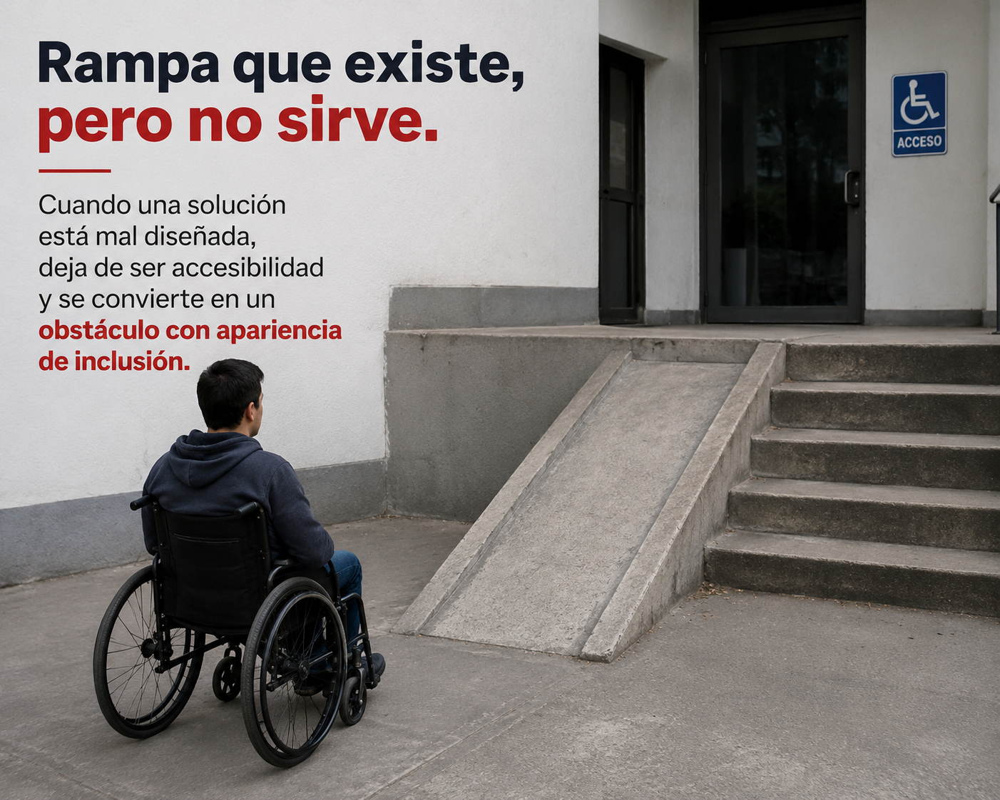
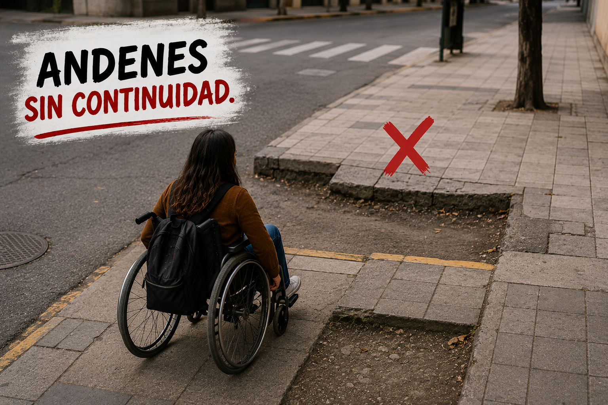
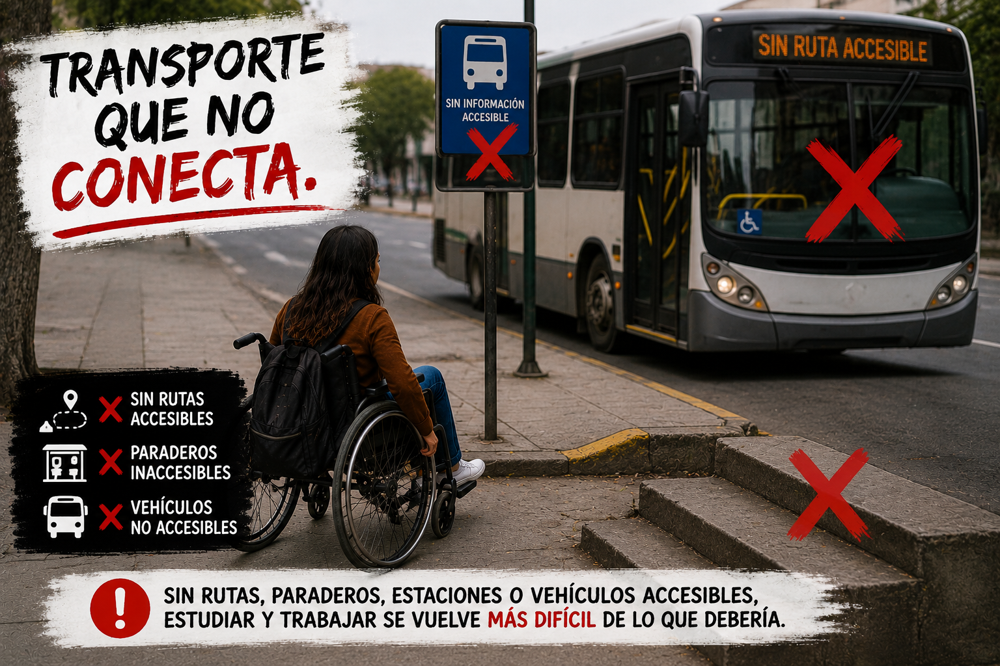
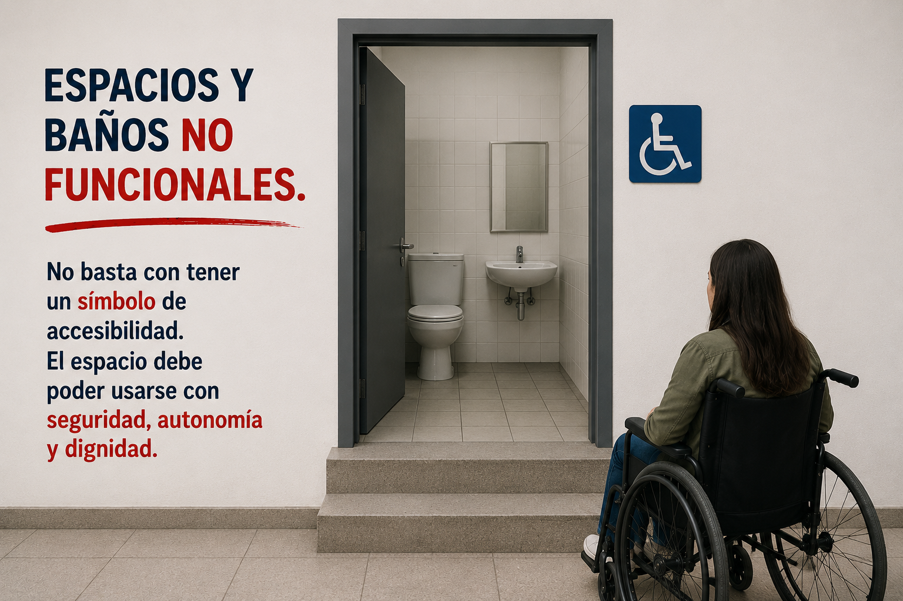

Porque todavía hay personas que tienen que calcular si el mundo les va a permitir salir.
Para muchas personas con discapacidad física, salir de casa no empieza con elegir un destino. Empieza con una pregunta: ¿habrá una ruta accesible?, ¿podré entrar?, ¿habrá baño adecuado?, ¿alguien pensó en mí cuando diseñó este lugar?
Una verdad incómoda
El problema no empieza en el cuerpo.
El problema no empieza en el cuerpo.
Empieza cuando el entorno se diseña como si todas las personas se movieran igual.
Una rampa demasiado inclinada, un andén roto, una estación sin acceso, una universidad con rutas internas imposibles o un baño que solo cumple en apariencia no son detalles menores.
Son decisiones que pueden definir si una persona estudia, trabaja, participa, se desplaza o se queda por fuera.
Las barreras reales
No son casos aislados. Son escenas cotidianas.

Rampa que existe, pero no sirve.
Cuando una solución está mal diseñada, deja de ser accesibilidad y se convierte en un obstáculo con apariencia de inclusión.

Andenes sin continuidad.
Un trayecto puede volverse imposible cuando cada cuadra obliga a improvisar, pedir ayuda o tomar riesgos.

Transporte que no conecta.
Sin rutas, paraderos, estaciones o vehículos accesibles, estudiar y trabajar se vuelve más difícil de lo que debería.

Espacios y baños no funcionales.
No basta con tener un símbolo de accesibilidad. El espacio debe poder usarse con seguridad, autonomía y dignidad.
Punto de partida
El problema no es la discapacidad
El problema no es la persona, es el entorno que no fue pensado para todas las formas de movilidad.
- No es la silla de ruedas. Es la escalera sin alternativa.
- No es pedir apoyo. Es no tener información clara para decidir.
- No es la diferencia. Es el diseño que sigue excluyendo.
Lo que queremos cambiar
Valores institucionales
Dignidad
No trabajamos desde la lástima, sino desde el reconocimiento pleno de derechos.
Accesibilidad real
No nos basta que algo exista en el papel; debe funcionar en la vida cotidiana.
Evidencia
Queremos que las decisiones se basen en experiencias, datos, diagnósticos y análisis serios.
Autonomía
Defendemos entornos que permitan decidir, moverse y participar sin depender siempre de otros.
INCLUSIA existe para mirar esas barreras de frente.
Queremos pasar de la queja a la transformación: documentar lo que ocurre, comunicarlo con claridad, proponer mejoras y conectar a quienes pueden hacerlas posibles.